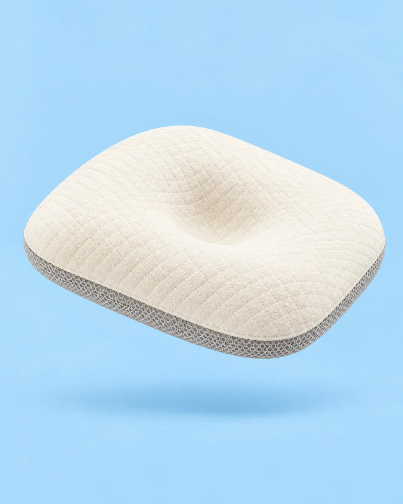
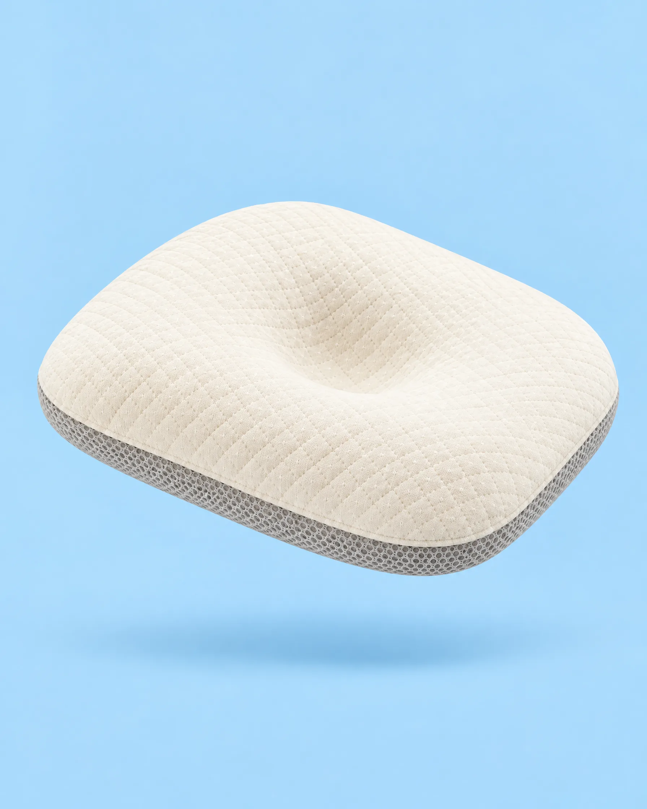
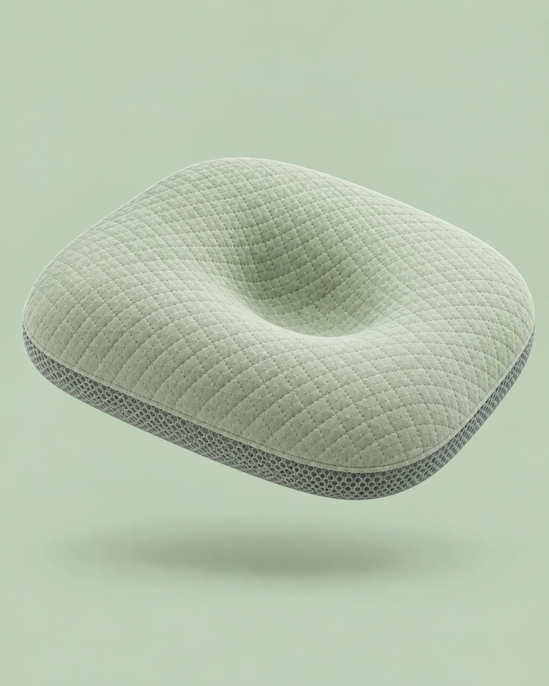
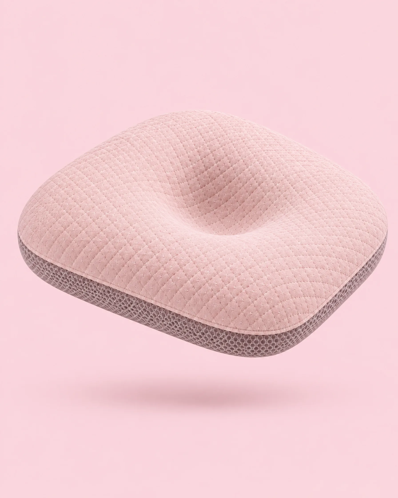
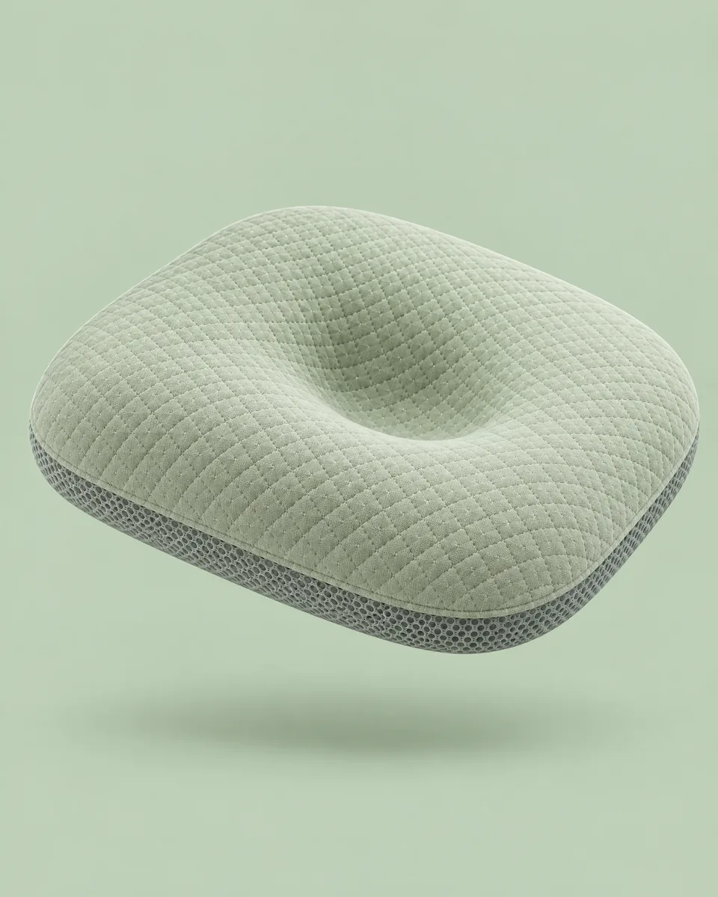
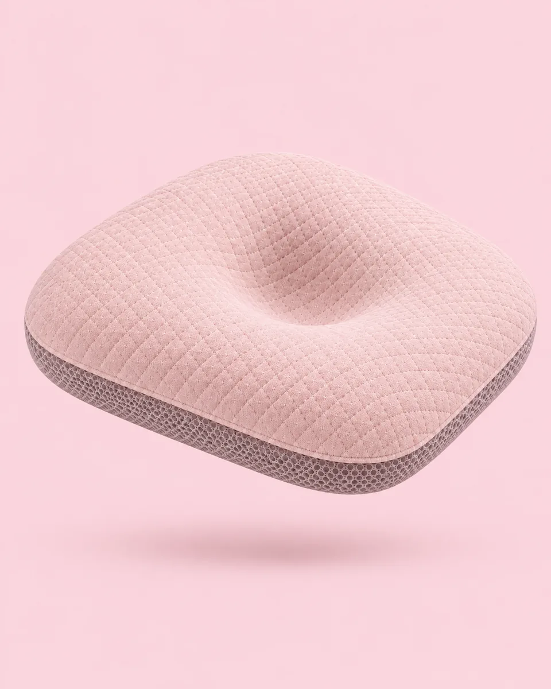
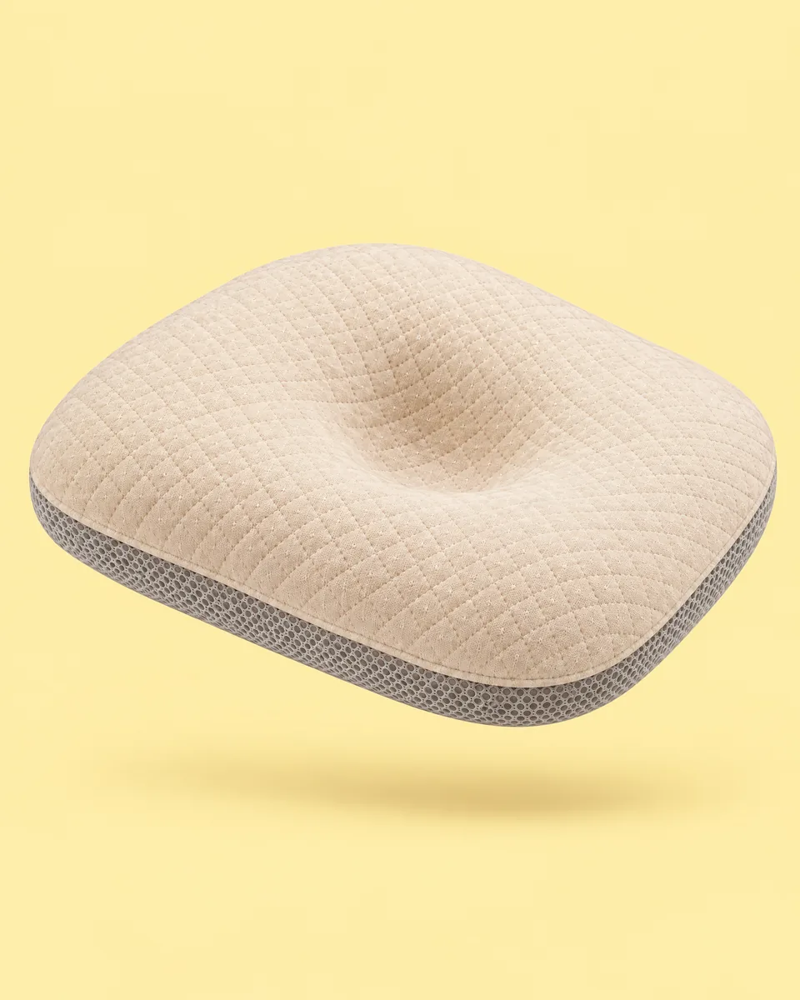
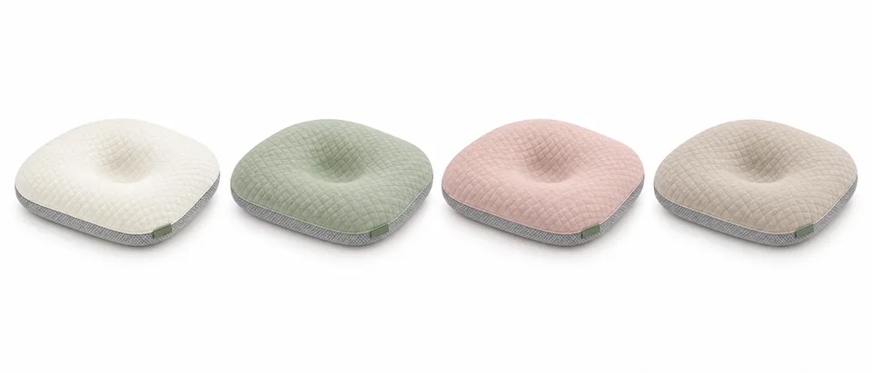
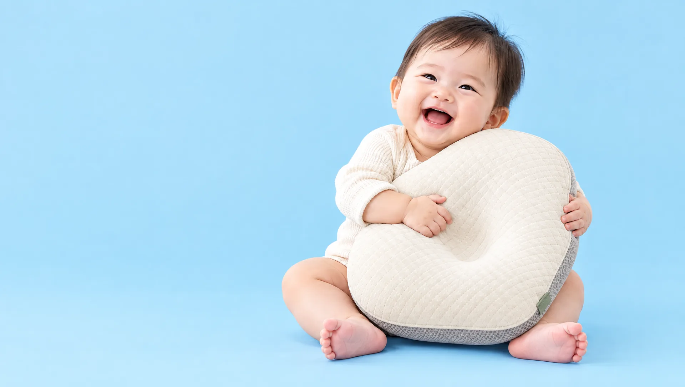
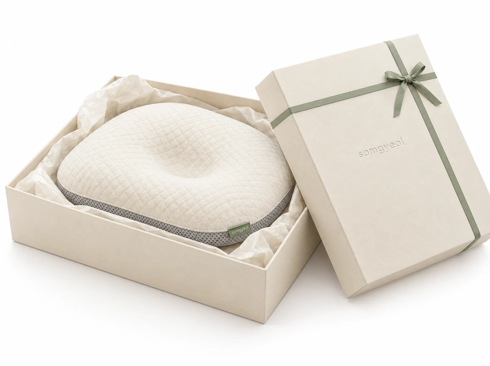

아이보리
기본색. 어디에나.
솜결 에어 베개
숨쉬듯 가볍게.
180 g의 가벼운 결. 숨 쉬는 메쉬 코어와 벗겨서 빠는 오가닉 코튼 커버.
보호자가 지켜보는 깨어 있는 시간을 위해 만들었습니다.

아기의 첫 베개는 가볍고 정직해야 합니다. 솜결은 시험할 수 있는 숫자만 말하고, 보건 권고를 먼저 안내합니다.
아이보리, 세이지, 더스티 핑크, 오트. 아기방 어디에 두어도 조용히 어울리는 네 가지 색.



아이보리

기본색. 어디에나.

차분한 초록.

은은한 분홍.

따뜻한 베이지.

커버만 따로 29,000원.
달걀 세 개 무게. 아기가 깨어 있는 동안 자세를 바꿔 줄 때, 한 손으로 옮깁니다.

사용 시간
솜결은 잠자리 용품이 아닙니다. 보호자가 곁에서 지켜보는 낮 시간, 아기가 누워 노는 동안 머리를 받쳐 주는 보조 도구입니다. 아기가 뒤집기를 시작하면 사용을 중단하세요.

아래에서 위로. 받치고, 숨 쉬고, 감쌉니다.

분리 세탁. OEKO-TEX Standard 100 Class I 원단(가상 표기).
열이 머물지 않는 통기 구조. 통세탁 가능.
중앙 오목면으로 압력을 넓게 나눕니다.
3D 에어메쉬 코어로 뒤통수 열이 머물지 않게. 통기도 시험 수치 자리: ○○ cm³/cm²/s.
머리가 닿는 면적을 넓혀 압력을 나눕니다. 물리적 구조에 대한 설명이며 의료 효과를 뜻하지 않습니다.
커버를 벗겨 30도 세탁. 코어는 통세탁. 건조기는 사용하지 마세요.
2 mm 인서트 패드 2장. 1~2개월 0 mm, 3~4개월 2 mm, 5개월부터 4 mm. 뒤집기 시작 시 중단.

안전 안내
아기를 똑바로 눕혀 재우고, 잠자리에 베개나 쿠션, 인형 등을 두지 않는 것이 좋습니다. 너무 폭신한 침대나 요는 피하세요. 권장 실내 온도는 22~24도입니다.
수면 중 사용을 권하지 않습니다. 보호자가 지켜보는 깨어 있는 시간에 사용하세요. 뒤집기를 시작하면 사용을 중단하세요.
생후 7~12주 아기 10명 중 4~5명에서 한쪽으로 납작한 두상이 관찰되며 대부분 경증입니다. 기본은 자세 바꾸기와 터미타임이고, 솜결은 깨어 있는 시간의 보조 도구입니다. (Mawji 2013)
어린이제품 안전특별법에 따른 유아용 섬유제품 안전확인 신고. KC 안전확인 신고번호 CB0000-0000 (가상). 포름알데히드 20 mg/kg 이하, pH 4.0~7.5 시험.
생후 1개월부터 뒤집기를 시작하기 전까지입니다. 보호자가 지켜보는 깨어 있는 시간에만 사용하세요.
아니요. 수면 중 사용을 권하지 않습니다. 질병관리청은 잠자리에 베개나 쿠션을 두지 말 것을 권하며, 솜결도 같은 권고를 따릅니다.
커버를 벗겨 30도 세탁하세요. 메쉬 코어는 통세탁이 가능합니다. 건조기는 사용하지 마세요. 세탁 20회 시험에서 수축률 2% 이내였습니다.
베이스 아래 2 mm 인서트 패드를 0장, 1장, 2장 넣어 0 / 2 / 4 mm로 맞춥니다. 1~2개월 0 mm, 3~4개월 2 mm, 5개월부터 4 mm를 권합니다.
사용을 중단하세요. 아기가 스스로 몸을 뒤집기 시작하면 어떤 베개도 두지 않는 것이 안전합니다.

구매
89,000원 커버 추가 29,000원 · 선물 세트 109,000원
색상 아이보리
데모 페이지입니다. 버튼은 동작하지 않습니다.